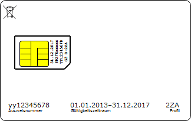
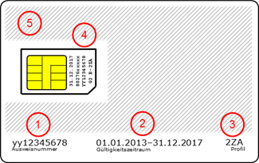
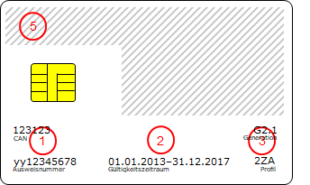
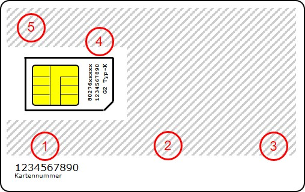
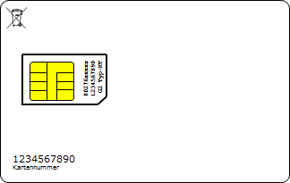
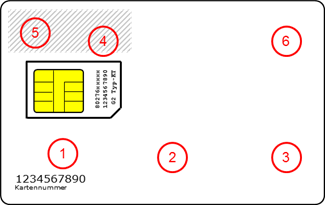
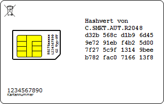
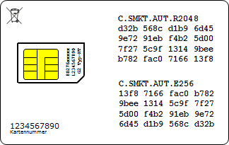
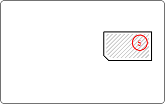
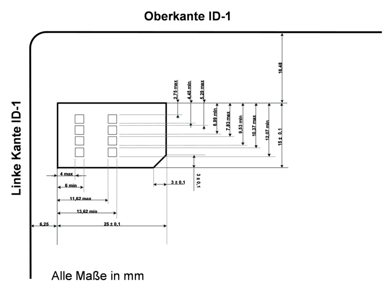

Elektronische Gesundheitskarte und Telematikinfrastruktur
Gemeinsame optische
Merkmale der SMC
| Version | 3.8.0 |
| Revision | 571908 |
| Stand | 30.06.2020 |
| Status | freigegeben |
| Klassifizierung | öffentlich |
| Referenzierung | gemSpec_SMC_OPT |
Änderungen zur Vorversion
Anpassungen des vorliegenden Dokumentes im Vergleich zur Vorversion können Sie der nachfolgenden Tabelle entnehmen.
Dokumentenhistorie
| Version |
Stand |
Kap./ Seite |
Grund der Änderung, besondere Hinweise |
Bearbeitung |
|---|---|---|---|---|
| 1.0.0 |
22.08.08 |
freigegeben Die Version 1.0.0 wurde im Rahmen der Testmaßnahmen zu Rel. 2.3.4 erstellt. |
gematik |
|
| 3.0.0 |
19.09.12 |
freigegeben |
gematik |
|
| 3.0.1 |
28.11.13 |
Einfügen Kapitel 2.4.4 mit AFO zu elektrophysikalischen Eigenschaften |
gematik |
|
| 23.01.14 |
Ergänzungen zu elektro-physikalischen Eigenschaften |
gematik |
||
| 3.2.0 |
21.02.14 |
freigegeben |
gematik |
|
| 3.2.1 |
06.05.14 |
Streichen der Vorgabe für die Bedruckung der Rückseite |
gematik |
|
| 3.3.0 |
06.06.14 |
Einarbeitung Änderungen Iteration 3 |
gematik |
|
| 3.4.0 |
16.10.16 |
Aufnahme SMC-B für Organisationen der Gesellschafter, Anpassungen gemäß Änderungsliste |
gematik |
|
| 3.5.0 |
06.02.17 |
Einarbeitung gemäß Änderungsliste |
gematik |
|
| 3.6.0 |
18.12.18 |
freigegeben |
gematik |
|
| 3.7.0 |
15.05.19 |
freigegeben |
gematik |
|
| 3.8.0 | 30.06.20 | Anpassungen gemäß Scope-Themen aus Systemdesign R4.0.0 | gematik |
Dieses Dokument beschreibt die gemeinsamen Merkmale bezüglich der optischen Gestaltung von (g)SMCs, die im Rahmen der Einführung der elektronischen Gesundheitskarte von verschiedenen Herausgebern ausgegeben werden.
Eine (g)SMC im Sinne dieses Dokumentes ist eine Chipkarte, die
existiert. Sollte ein bestimmter Typ der (g)SMC gemeint sein, dann wird dieser nachfolgend immer explizit angegeben.
Dieses Dokument richtet sich an Herausgeber und Produzenten von (g)SMCs.
Dieses Dokument enthält normative Festlegungen zur Telematikinfrastruktur des deutschen Gesundheitswesens für die Gestaltung der Karten der Generation 2. Der Gültigkeitszeitraum der vorliegenden Version und deren Anwendung in Zulassungsverfahren werden durch die gematik GmbH in gesonderten Dokumenten (z. B. Dokumentenlandkarte, Produkttypsteckbrief, Leistungsbeschreibung) festgelegt und bekannt gegeben.
Schutzrechts-/Patentrechtshinweis
Die nachfolgende Spezifikation ist von der gematik allein unter technischen Gesichtspunkten erstellt worden. Im Einzelfall kann nicht ausgeschlossen werden, dass die Implementierung der Spezifikation in technische Schutzrechte Dritter eingreift. Es ist allein Sache des Anbieters oder Herstellers, durch geeignete Maßnahmen dafür Sorge zu tragen, dass von ihm aufgrund der Spezifikation angebotene Produkte und/oder Leistungen nicht gegen Schutzrechte Dritter verstoßen und sich ggf. die erforderlichen Erlaubnisse/Lizenzen von den betroffenen Schutzrechtsinhabern einzuholen. Die gematik GmbH übernimmt insofern keinerlei Gewährleistungen.
Dieses Dokument beschreibt nur die sektorübergreifend festgelegten Gestaltungsmerkmale. Die einzelnen Sektoren bzw. Herausgeber können weitere Vorgaben für die übrige Gestaltung der von ihnen herausgegebenen (g)SMC festlegen.
Ferner werden keinerlei Vorgaben über die Verfahren zur Bedruckung der (g)SMC getroffen.
Anforderungen als Ausdruck normativer Festlegungen werden durch eine eindeutige ID sowie die dem RFC 2119 [RFC2119] entsprechenden, in Großbuchstaben geschriebenen deutschen Schlüsselworte MUSS, DARF NICHT, SOLL, SOLL NICHT, KANN gekennzeichnet.
Sie werden im Dokument wie folgt dargestellt:
<AFO-ID> - <Titel der Afo>
Text / Beschreibung
[<=]
Dabei umfasst die Anforderung sämtliche zwischen Afo-ID und der Textmarke [<=] angeführten Inhalte.
Die Gestaltung der SMC-B richtet sich nach dem vorgesehenen Einsatzbereich. Die hauptsächliche Verwendung einer SMC-B ist der dauerhafte und rein kontaktbehaftete Einsatz in einem Kartenterminal. Darüber hinaus können SMC-B mit kontaktlosen Eigenschaften für die Verwendung mit kontaktlosen Kartenlesern erforderlich sein.
SMC-B, deren COS/Objektsystem keine kontaktlose Schnittstelle realisiert, sind grundsätzlich im ID-1-Format mit herausbrechbarem ID-000-Teil auszuführen.
SMC-B, deren COS/Objektsystem die Option kontaktlose Schnittstelle gemäß Option (SMC-B CL) aus [gemSpec_SMC-B_ObjSys_G2.1] realisiert, können durch Verwendung eines Kartenkörpers im Format ID-1 mit geeigneter Antenne für den kontaktlosen Einsatz vorgesehen sein. Werden diese kontaktlosen Eigenschaften niemals benötigt, kann das Format ID-1 ohne Antenne, jedoch mit herausbrechbarem ID-000-Teil verwendet werden.
Card-G2-A_2008-01
Eine SMC-B, die nicht für die Verwendung der kontaktlosen Schnittstelle vorgesehen ist, MUSS im Format ID-1 mit herausbrechbarem ID-000-Teil geliefert werden.
<=
A_19492
Eine SMC-B, die für die Verwendung der kontaktlosen Schnittstelle vorgesehen ist, MUSS im ID-1-Format geliefert werden. <=
Card-G2-A_2009-01
Die Vorderseite einer SMC-B, die nicht für die Verwendung der kontaktlosen Schnittstelle vorgesehen ist, MUSS das Basis-Layout gemäß Abbildung Abb_SMCOPT_01 verwenden.

Abbildung 1: Abb_SMCOPT_01 – Basis-Layout der SMC-B mit beispielhafter Kennzeichnung zur Abfallentsorgung
A_19493
Die Vorderseite einer SMC-B, die für die Verwendung der kontaktlosen Schnittstelle vorgesehen ist, MUSS das Basis-Layout gemäß Abbildung Abb_SMCOPT_12 verwenden.
Abbildung 2: Abb_SMCOPT_12 – Basis-Layout der SMC-B zur kontaktlosen Verwendung mit beispielhafter Kennzeichnung zur Abfallentsorgung
Um die Beschreibung zu erleichtern, werden die Kartenregionen folgendermaßen bezeichnet (Zahl in den roten Kreisen):

Abbildung 3: Abb_SMCOPT_02 – Basis-Layout der SMC-B mit Kennzeichnung der Kartenregionen

Abbildung 4: Abb_SMCOPT_13 – Basis-Layout der SMC-B zur kontaktlosen Verwendung mit Kennzeichnung der Kartenregionen
Card-G2-A_2010
Auf die Vorderseite der SMC-B MUSS gemäß Abbildung Abb_SMCOPT_02, Region 1, das Wort „Ausweisnummer“ und darüber linksbündig die Ausweisnummer aufgedruckt werden. Die Ausweisnummer ist zehnstellig und besteht aus den letzten zehn Ziffern der ICCSN.
<=Card-G2-A_2011
Auf die Vorderseite der SMC-B SOLL gemäß Abbildung Abb_SMCOPT_02, Region 2, das Wort „Gültigkeitszeitraum“ und darüber linksbündig der Gültigkeitszeitraum aufgedruckt werden.
Der Gültigkeitszeitraum ist der Gültigkeitszeitraum der X.509-Zertifikate der SMC-B und setzt sich wie folgt zusammen:
Erster Tag der Gültigkeit in der Form „TT.MM.JJJJ“ (Tag und Monat je zweistellig ggf. mit vorangestellter Null, Jahr vierstellig) bzw. je nach Herausgeber auch „TT.MM.JJ“ (Jahr nur zweistellig).
Einem Bindestrich als Trennzeichen ohne Leerzeichen zw. Beginn und Ende des Gültigkeitszeitraumes
Letzter Tag der Gültigkeit (Form wie erster Tag der Gültigkeit).
Card-G2-A_2012
Auf die Vorderseite der SMC-B MUSS gemäß Abbildung Abb_SMCOPT_02, Region 3, das Wort „Profil“ und rechtsbündig darüber die Profilbezeichnung des organisationsbezogenen Profils aufgedruckt werden. SMC-Bs, die keinem Profil zugeordnet werden und damit keine Rechte zum Zugriff auf die eGK besitzen, MÜSSEN anstelle der Profilbezeichnung den Aufdruck „-“ erhalten.
Die Profilbezeichnung ist die auf den Text „CHA.“ folgende Zeichenkette in der Spalte Zugriffsprofil der Tabelle „Tab_PKI_254 Zugriffsprofile für eine Rollenauthentisierung“.
<=Card-G2-A_2013
Die Angaben aus den Regionen 1 bis 3 gemäß Abbildung Abb_SMCOPT_02 MÜSSEN einheitlich an einer waagerechten Linie im unteren Bereich der SMC-B ausgerichtet werden.
<=Card-G2-A_2014
Rechts vom Chip MÜSSEN gemäß Abbildung Abb_SMCOPT_02, Region 4, folgende Werte rechtsbündig und um 90° nach links gedreht auf den ID-000-Bereich der SMC-B aufgedruckt werden:
Card-G2-A_2015
Für die Bedruckung des ID-000-Bereichs der Vorderseite der SMC-B MUSS eine nichtproportionale Schriftart (z.B. Courier) in einer Größe verwendet werden, die den zur Verfügung stehenden Platz optimal ausnutzt.
<=A_19494
Auf der Vorderseite der SMC-B, die für die Verwendung der kontaktlosen Schnittstelle vorgesehen ist, MUSS gemäß Abbildung Abb_SMCOPT_13, Region 1, das Wort "CAN" und linksbündig darüber der Wert der CAN aufgedruckt werden. Dieser MUSS mit dem Attribut can des Objekts SK.CAN übereinstimmen.
Die Platzierung erfolgt oberhalb und linksbündig zu den Angaben zur Ausweisnummer.
<=
A_19963
Auf der Vorderseite der SMC-B, die für die Verwendung der kontaktlosen Schnittstelle vorgesehen ist, MUSS gemäß Abbildung Abb_SMCOPT_13, Region 3, das Wort "Generation" und rechtsbündig darüber ein "G" gefolgt von der Generationsnummer aufgedruckt werden. <=
Die Wahl der Schriftart, der Schriftgröße und des Schnitts für die Bedruckung des ID-1-Bereichs der SMC-B obliegt jedem SMC-Herausgeber.
Card-G2-A_2017
Für die Vorderseite der gSMC-K der Generation 2 MUSS das Basis-Layout gemäß Abbildung Abb_SMCOPT_03 verwendet werden:
Abbildung 5: Abb_SMCOPT_03 – Gemeinsames Basis-Layout der gSMC-K Generation 2 mit beispielhafter Kennzeichnung zur Abfallentsorgung
Um die Beschreibung zu erleichtern, werden die Kartenregionen folgendermaßen bezeichnet (Zahl in den roten Kreisen):

Abbildung 6: Abb_SMCOPT_04 – Gemeinsames Basis-Layout der gSMC-K Generation 2 mit Kennzeichnung der Kartenregionen
Für die einzelnen Merkmale der gSMC-K gelten folgende Festlegungen:
Card-G2-A_2018
Auf die Vorderseite der gSMC-K MUSS gemäß Abbildung Abb_SMCOPT_04, Region 1, das Wort „Kartennummer“ und darüber linksbündig die Kartennummer aufgedruckt werden. Die Kartennummer ist zehnstellig und besteht aus den letzten zehn Ziffern der ICCSN.
<=Für Region 2 gibt es keine Vorgaben.
Card-G2-A_2019
Sofern die gSMC-K im ID-1-Format geliefert wird, DÜRFEN auf die Vorderseite des ID-1-Formats der gSMC-K Profilnummern NICHT aufgedruckt werden.
<=Card-G2-A_2020
Rechts vom Chip MÜSSEN gemäß Abbildung Abb_SMCOPT_04, Region 4, folgende Werte rechtsbündig und um 90° nach links gedreht auf den ID-000-Bereich der gSMC-K aufgedruckt werden:
ICCSN
In der zweiten Zeile stehen die ersten zehn Ziffern der ICCSN. In der dritten Zeile stehen die letzten zehn Ziffern der ICCSN.
Generation und Kartentyp
In der vierten Zeile stehen die Generation und der Kartentyp. Dabei gilt folgender Aufbau:
Ein „G“ gefolgt von der Generationsnummer 2
Ein Leerzeichen
Das Wort „Typ“
Ein Bindestrich
Der Buchstabe „K“
Card-G2-A_2021
Für die Bedruckung des ID-000-Bereichs der Vorderseite der SMC-K MUSS eine nichtproportionale Schriftart (z.B. Courier) in einer Größe verwendet werden, die den zur Verfügung stehenden Platz optimal ausnutzt.
<=Die Wahl der Schriftart, der Schriftgröße und des Schnitts für die Bedruckung des ID-1-Bereichs der gSMC-K obliegt jedem gSMC-Herausgeber.
Card-G2-A_2022
Die gSMC-KT MUSS im Format ID1 mit herausbrechbarem ID-000-Teil geliefert werden.
<=
Card-G2-A_2023
Für die Vorderseite der gSMC-KT der Generation 2 MUSS das Basis-Layout gemäß Abbildung Abb_SMCOPT_05 verwendet werden.

Abbildung 7: Abb_SMCOPT_05 – Gemeinsames Basis-Layout der gSMC-KT Generation 2 mit beispielhafter Kennzeichnung zur Abfallentsorgung
Um die Beschreibung zu erleichtern, werden die Kartenregionen folgendermaßen bezeichnet (Zahl in den roten Kreisen):

Abbildung 8: Abb_SMCOPT_06 – Gemeinsames Basis-Layout der gSMC-KT Generation 2 mit Kennzeichnung der Kartenregionen

Abbildung 9: Abb_SMCOPT_09 – Gemeinsames Basis-Layout der gSMC-KT Generation 2 mit beispielhafter Kennzeichnung zur Abfallentsorgung

Abbildung 10 : Abb_SMCOPT_10 – Gemeinsames Basis-Layout der gSMC-KT Generation G2.1 mit Hashwerten (beispielhaft)
Für die einzelnen Merkmale der gSMC-KT gelten folgende Festlegungen:
Card-G2-A_2024
Auf die Vorderseite der gSMC-KT MUSS gemäß Abbildung Abb_SMCOPT_06, Region 1, das Wort „Kartennummer“ und darüber linksbündig die Kartennummer aufgedruckt werden. Die Kartennummer ist zehnstellig und besteht aus den letzten zehn Ziffern der ICCSN.
<=Für Region 2 gibt es keine Vorgaben.
Card-G2-A_2025
Sofern die gSMC-KT im ID-1-Format geliefert wird, DÜRFEN auf die Vorderseite des ID-1-Formats der gSMC-KT Profilnummern NICHT aufgedruckt werden.
<=Card-G2-A_3209
Falls die gSMC-KT als ID1-Karte mit herausbrechbarem ID-000-Teil geliefert wird, MUSS im freien Bereich der Vorderseite (Region 6) gemäß Abbildung Abb_SMCOPT_09 der Hashwert (Fingerprint) des Zertifikats C.SMKT.AUT.R2048 , welcher gemäß [gemSpec_Krypt#GS-A_4393] gebildet wird, in einer nichtproportionalen Schrift gut lesbar aufgedruckt werden.
Card-G2-A_3239
Falls die gSMC-KT als ID-000-Karte geliefert wird, MUSS der Hashwert (Fingerprint) des Zertifikats C.SMKT.AUT.R2048, welcher gemäß [gemSpec_Krypt#GS-A_4393] gebildet wird, in Papierform (z.B. in einem Begleitschreiben) an den Empfänger der gSMC-KT übermittelt werden.
A_16189
Falls die gSMC-KT der Generation G2.1 als ID1-Karte mit herausbrechbarem ID-000-Teil geliefert wird, MUSS im freien Bereich der Vorderseite (Region 6) gemäß Abbildung Abb_SMCOPT_10 der Hashwert (Fingerprint) des Zertifikats C.SMKT.AUT.R2048 und des Zertifikats C.SMKT.AUT.E256, welcher gemäß [gemSpec_Krypt#GS-A_4393] gebildet wird, in einer nichtproportionalen Schrift gut lesbar aufgedruckt werden.
Die aufgedruckten Hashwerte MÜSSEN zur Unterscheidung und Zuordnung eindeutig gekennzeichnet sein, beispielsweise durch die Angabe der Zertifikatsnamen.
A_16190
Falls die gSMC-KT als ID-000-Karte geliefert wird, MÜSSEN die Hashwerte (Fingerprint) der Zertifikate C.SMKT.AUT.R2048 und C-SMKT.AUT.E256, welche gemäß [gemSpec_Krypt#GS-A_4393] gebildet werden, in Papierform (z.B. in einem Begleitschreiben) an den Empfänger der gSMC-KT übermittelt werden.
Card-G2-A_2026
Rechts vom Chip der SMC-KT MÜSSEN gemäß Abbildung Abb_SMCOPT_06, Region 4, folgende Werte rechtsbündig und um 90° nach links gedreht auf den ID-000-Bereich der gSMC-KT aufgedruckt werden:
Card-G2-A_2027
Für die Bedruckung des ID-000 Bereichs der Vorderseite der gSMC-KT MUSS eine nichtproportionale Schriftart (z.B. Courier) in einer Größe verwendet werden, die den zur Verfügung stehenden Platz optimal ausnutzt.
<=Die Wahl der Schriftart, der Schriftgröße und des Schnitts für die Bedruckung des ID-1-Bereichs der gSMC-KT obliegt jedem gSMC-Herausgeber.
Zur Darstellung der Konformität der (g)SMC zu kennzeichnungspflichtigen Richtlinien oder gesetzlichen Vorgaben, beispielsweise die Kennzeichnung gemäß des Gesetzes über das Inverkehrbringen, die Rücknahme und die umweltverträgliche Entsorgung von Elektro- und Elektronikgeräten [ElektroG] oder die CE-Kennzeichnung der Europäischen Union, können geeignete Kennzeichen (beispielsweise Symbole) auf die SMC aufgebracht werden.
Die Kennzeichnung ist Bestandteil des Aufdrucks der Kartenkörper im ID-1-Bereich oder eines Aufdrucks auf der Rückseite des herausbrechbaren ID-000-Teils.

Abbildung 11: Abb_SMCOPT_11 - Druckbereich der ID-000-Rückseite zum Aufdruck kennzeichnungspflichtiger Angaben
Card-G2-A_2031
Auf den (g)SMCs KÖNNEN zusätzliche optische Merkmale aufgedruckt werden. Die Ausgestaltung obliegt dem jeweiligen (g)SMC-Herausgeber und ist nicht normiert.
<=Beispiele hierfür sind:
A_16191
Wenn der Kartenhersteller Kennzeichen (Symbole oder weitere Angaben) zur Kennzeichnung der Konformität der Karte zu kennzeichnungspflichtigen Richtlinien oder gesetzlichen Vorgaben auf den Kartenkörper aufbringen muss, dann KANN dieses innerhalb der als Region 56 gekennzeichneten schraffierten Fläche erfolgen.
<=
A_16999
Wenn kennzeichnungspflichtige Angaben auf den Kartenkörper aufgebracht werden, dann MUSS der Kartenhersteller sicherstellen, dass die jeweiligen Vorgaben zur Kennzeichnungspflicht in Bezug auf die zu verwendenden Symbole, sowie die Größe und Lesbarkeit der jeweiligen Kennzeichen eingehalten werden. <=
Card-G2-A_3478
Der Kartenkörper der (g)SMC MUSS konform zu [ISO 7810], [ISO_IEC 7810-1 AMD], [ISO 7816-1], [ISO/IEC 10373-1] und [ISO/IEC 10373-1 AMD1] sein. Im Einzelnen gelten folgende Kapitel der jeweiligen Spezifikationen:
a) ISO 7810:
Alle Kapitel, die alle Kartenformate betreffen und zusätzlich alle Kapitel, die explizit das ID-000-Format betreffen.
b) ISO_IEC 7810-1 AMD
Kapitel 9.1, 9.2, 9.3, 9.4.1, 9.5
c) ISO 7816-1
Kapitel 4.2, 4.3 und 4.4
d) ISO/IEC 10373-1
Es gelten die allgemein für alle Kartentypen gültigen Kapitel und in Kapitel 5 „Test Methods“ folgende Kapitel:
5.2 Dimensions of cards
5.3 Peel strength
5.4 Resistance to chemicals
5.5 Card dimensional stability and warpage with temperature and humidity
5.12 X-rays
5.13 Static magnetic fields
5.16 Surface distortions and raised areas
e) ISO/IEC 10373-1 AMENDMENT
Es gelten die allgemein für alle Kartentypen gültigen Kapitel, angepasst an die Belange des ID-000-Kartentyps, und zusätzlich die folgenden Kapitel:
5.17 Dimension and Location of Contacts for ICCs with contacts (location of
contacts as defined in Card-G2-A_xxxx instead of ISO 7816-2)
5.18 Static electricity test for ICCs with contacts
5.20 Electrical surface resistance of contacts of ICCs with contacts
5.21 Surface profile of contacts of ICCs with contacts
Card-G2-A_3513
Die Maße des Kartenkörpers und der Kontakte der (g)SMC MÜSSEN den Vorgaben der Abb_SMCOPT_08 entsprechen (Quelle [ETSI TS 100 977#Annex A]).
<=
Abbildung 12: Abb_SMCOPT_08 – Bemaßung der (g)SMC
| Kürzel |
Erläuterung |
|---|---|
| CMYK |
System zur Definition einer Farbe; CMYK steht für Cyan (Türkis), Magenta (Fuchsinrot), Yellow (Gelb) und Key/blacK (schwarz) |
| CVC |
Card Verifiable Certificate |
| gSMC |
gerätebezogene Security Module Card |
| gSMC-K |
gerätebezogene Security Module Card für den Konnektor |
| gSMC-KT |
gerätebezogene Security Module Card für das Kartenterminal |
| SMC |
Security Module Card |
| SMC-B |
Security Module Card für eine Organisation des Gesundheitswesens |
| ZDA |
Zertifizierungsdiensteanbieter |
Das Glossar der Telematikinfrastruktur wird als eigenständiges Dokument (vgl. [gemGlossar]) zur Verfügung gestellt.
Die nachfolgende Tabelle enthält die Bezeichnung der in dem vorliegenden Dokument referenzierten Dokumente der gematik zur Telematikinfrastruktur. Der mit der vorliegenden Version korrelierende Entwicklungsstand dieser Konzepte und Spezifikationen wird pro Release in einer Dokumentenlandkarte definiert; Version und Stand der referenzierten Dokumente sind daher in der nachfolgenden Tabelle nicht aufgeführt. Deren zu diesem Dokument jeweils gültige Versionsnummer ist in der aktuellen, von der gematik veröffentlichten Dokumentenlandkarte enthalten, in der die vorliegende Version aufgeführt wird.
| [Quelle] |
Herausgeber: Titel |
|---|---|
| [gemGlossar] |
gematik: Glossar der Telematikinfrastruktur |
| [gemSpec_SMC-B_ObjSys] |
gematik: Spezifikation des elektronischen Heilberufsausweises SMC-B - Objektsystem (Generation G2.1) |
| [gemSpec_SMC-K_ObjSys] |
gematik: Spezifikation der elektronischen Secure Module Card des Konnektors (gSMC-K) - Objektsystem |
| [gemSpec_SMC-KT_ObjSys] |
gematik: Spezifikation der elektronischen Secure Module Card des Kartenterminals (gSMC-KT) - Objektsystem (Generation G2.1) |
| [Quelle] |
Herausgeber (Erscheinungsdatum): Titel |
|---|---|
| [RFC2119] |
RFC 2119 (März 1997): Key words for use in RFCs to Indicate Requirement Levels S. Bradner, http://tools.ietf.org/html/rfc2109 |
| ISO/IEC 7810 |
Identification cards -- Physical characteristics Third edition 2003-11-01 |
| ISO/IEC 7810, AMENDMENT |
Identification cards - Physical characteristics - Amendment 1: Criteria for cards containing integrated circuits, Third edition 2003-11-01, AMENDMENT 1, 2009-12-15 |
| ISO/IEC 7816-1 |
Physical Charcteristics of Integrated Circuit Cards 2011 |
| ISO/IEC 10373-1 |
Identification cards -- Test methods -- Part 1: General characteristics Second edition 2006-05-01 |
| ISO/IEC 10373-1 AMENDMENT 1 |
Identification cards - Test methods - Part 1: General characteristics; Second edition 2006-05-01, Amendment 1, 2012-11-01AMD1 |
| [ElektroG] |
Gesetz über das Inverkehrbringen, die Rücknahme und die umweltverträgliche Entsorgung von Elektro- und Elektronikgeräten (Elektro- und Elektronikgerätegesetz - ElektroG), 20.10.2015 |
| [ETSI TS 100 977] |
Digital cellular telecommunications system (Phase 2+); Specification of the Subscriber Identity Module - Mobile Equipment (SIM-ME) Interface (3GPP TS 11.11) V8.14.0 (2007-06) |